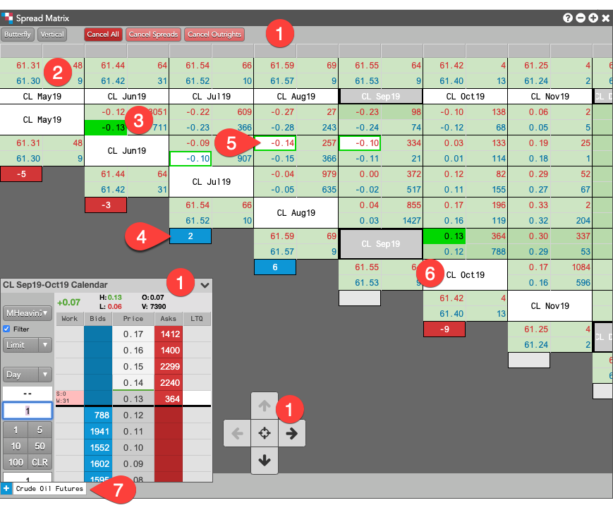
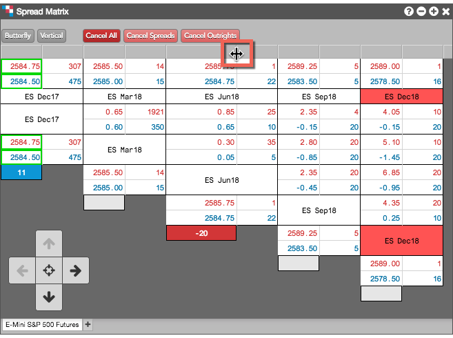
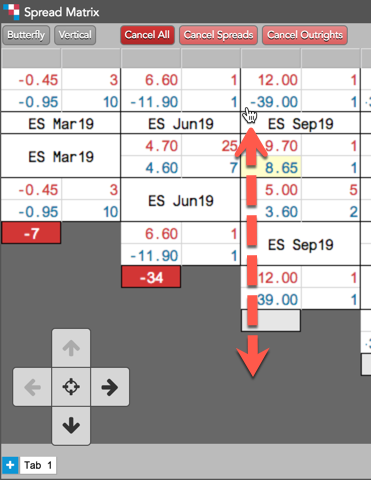
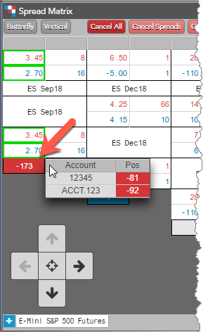

The Spread Matrix display consists of the following:

-
Show/Hide elements — Items you can show or hide from the context menu:
- Tool bar buttons — The following buttons are available:
- Butterfly/Calendar — Toggles the matrix between viewing Calendar spreads or Butterfly and Condor spreads. Note: Butterfly and Condor spreads are not available when viewing an inter-product spread matrix.
- Vertical/Staircase — Toggles the display of market data and positions in the Spread Matrix between either a vertical orientation or a staircase orientation.
- Cancel All — Cancels all spread and outright orders only in the instruments within your
Spread Matrix.
- Cancel Spreads — Cancels all spread orders only in the instruments within your
Spread Matrix.
- Cancel Outrights — Cancel all outright orders only in the instruments within your
Spread Matrix.
- Outright market data — Displays the best bid and ask prices and bid and ask quantities for an outright. Outrights are displayed along the top of the matrix and diagonally.
- Spread market data — Displays the best bid and ask prices and bid and ask quantities for an exchange-listed Calendar spread or synthetic inter-product spread. Spread prices are displayed where the outright contracts intersect.
- Position — Shows a long or short net position in an outright instrument.
- Background colors — Indicates working orders at or away from the inside market. Also, indicates the net change (up or down) for Bid and Ask prices using the Colors settings in
Spread Matrix: Settings.
- Contract names — Displays each expiry and different background colors for each yearly period for
contracts.
- Arrow pad — Allows you to scroll up/down or left/right to display contracts at the top of the matrix or diagonally. Click the center of the pad to return the matrix to it's original position.
- Tabs — Allow you to add exchange-listed, inter-product, or custom spreads in a single Spread Matrix.
Spread Matrix cell and background colors
The background and text colors in the Spread Matrix provide additional important information:
| Cell Color |
Description |
| Green |
Indicates a working order at the best inside market price. A green highlighted cell border indicates a working order away from the best inside market price. |
| Gray |
Identifies Calendar spread contracts in the matrix when you hover or click on the spread prices or quantities. |
| White, red, green, etc. |
Cells with contract names are highlighted to identify each yearly period for contracts. The Spread Matrix shows the
prompt-month, then lists the next 11 months after that month for each contract year. White identifies contracts in the first year, red identifies contracts in the second year, green the third year, etc. |
Resizing columns
You can resize individual columns by clicking and dragging a column divider bar in the column heading. If you hold down the Shift key while resizing a column, the width of all columns will be adjusted to the width of the resized column when you release the mouse button.

Adjusting font size in Spread Matrix
Press and hold the Shift+Ctrl keys while dragging the mouse up or down in the matrix to adjust the font size.

Net position by account
Middle-click the value in a Position cell to display your net position by account.
